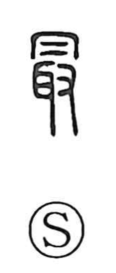

最

Uncategorized
Kun: mottomo, toru | On: sai
most ・ foremost ・ best ・ to take ・ to collect
Explanation
Shirakawa interprets 最 as a compound: 取, which shows an ear 耳 and a hand 又 and originally meant taking an enemy’s left ear as proof of a kill, set beneath 月, understood here not as the moon but as a hood or cover. The graph evokes many such ears being gathered and covered from above, giving the senses of taking and collecting. Compare 撮, “to pinch up,” which likewise expresses taking with the fingertips. Because military merit was reckoned by the number of ears taken, 最 came to signify the highest achievement, and by extension ‘the foremost’ and ‘most, extremely,’ alongside its older senses ‘to take’ and ‘to collect.’